Curated Coach Tour Collection
UK Tours 2026
Seven exceptional journeys across Britain and Europe, crafted for international travellers — 100% international dining, expert guides, and stays in historic castles.
 London, England
London, England Edinburgh
Edinburgh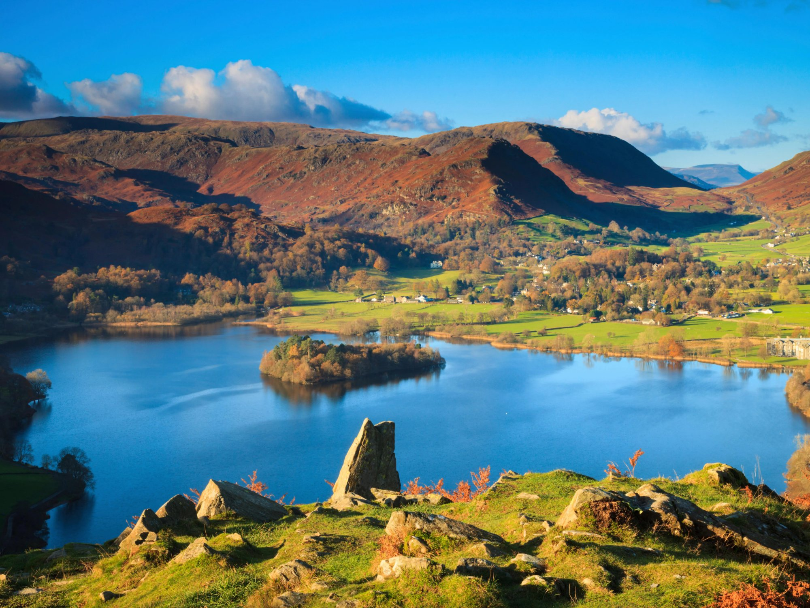
Lake District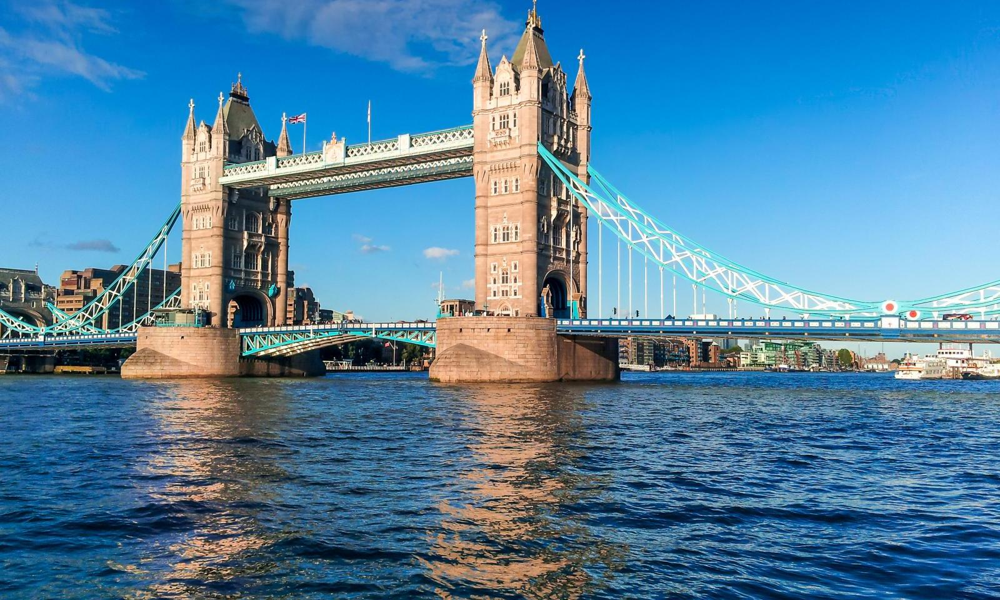
Tower Bridge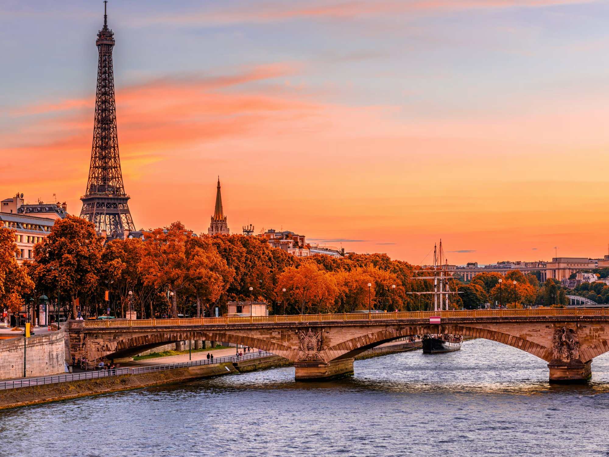
Paris, FranceTour Collection 2026
Seven curated UK & Europe journeys for international travellers · 16-Seater Coaches · International Cuisine
01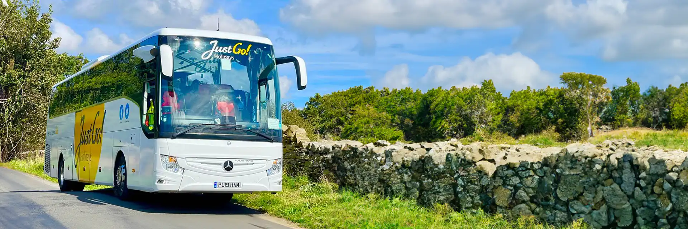
Grand British Isles Explorer
16 Days | London to Edinburgh | The Ultimate UK Heritage Journey
✅ What's Included
- ✓ All 45 meals — breakfast, lunch & dinner
- ✓ 24 included activities & entrance fees
- ✓ Expert UK tour manager throughout
- ✓ 16-seater private coach
- ✓ All hotel accommodation as per programme
- ✓ Airport transfers (arrival & departure)
- ✓ Porterage at all hotels
- ✓ Tour manager assistance 7am–10pm daily
- ✓ Special dietary meal arrangements on request
🥗 Dining Guarantee
Suitable for all dietary requirements
🗺 Route Map
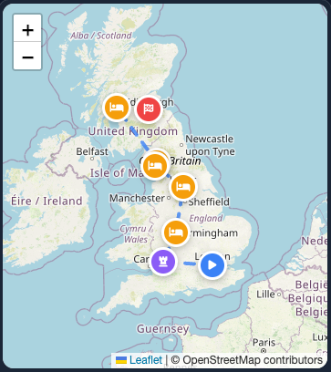
⭐ Don't Miss
- The Rajasthani set meal at The Ivy — this sets the standard for all meals to come
- The Beefeater tour at Tower of London — their stories of imprisonment and execution bring history alive
- The Long Room at Lords — this is cricket\
Ideal For
Families, heritage enthusiasts and first-time UK visitors wanting comprehensive coverage
Group Size
Maximum 16 passengers on a private coach. Small group format ensures personal attention and flexibility at every destination.
Hotel Programme
| Location | Hotel | Grade | Nights |
|---|---|---|---|
| London | Heston Hyde Hotel | 4-star | 3 nts |
| Thornbury | Thornbury Castle | Castle | 2 nts |
| Birmingham | Delta Hotels Marriott | 4-star | 1 nts |
| Leeds | Weetwood Hall Estate | Manor | 2 nts |
| Windermere | The Ro Hotel | 4-star | 3 nts |
| Haweswater | The Haweswater Hotel | Country | 1 nts |
| Helensburgh | Rosslea Hall Hotel | 4-star | 2 nts |
| Edinburgh | Dalhousie Castle | Castle | 2 nts |
Day-by-Day Itinerary
Welcome at London Heathrow by your tour manager. Transfer to Heston Hyde Hotel, Hounslow (20 minutes). Check-in and freshen up. Welcome welcome dinner at The Ivy (London). Orientation meeting with tour manager covering 16-day journey preview.
Full English breakfast at hotel (full menu available). Depart for panoramic London city tour with expert local guide: Hyde Park, Big Ben, Houses of Parliament, Westminster Abbey (exterior), Buckingham Palace (photo stop for Changing of the Guard, subject to schedule), Trafalgar Square, Piccadilly Circus, Tower Bridge. Lunch at a Covent Garden brasserie including dosas and set meals. Afternoon: Tower of London entrance with Yeoman Warder (Beefeater) guide. See Crown Jewels including Crown Jewels collection. London Eye experience (30-minute rotation, panoramic views). Dinner at a celebrated local restaurant (King's Cross) — vintage-style cuisine in vintage railway setting.
Breakfast at hotel. Depart for Lords Cricket Stadium — "Home of Cricket" guided tour including Long Room (players walk through), players' dressing rooms, and museum. See the actual Ashes urn. If closed: extended Tower of London visit. Lunch at a Michelin-starred Mayfair restaurant. Afternoon: Madame Tussauds London — wax figures of Entertainment stars (Shah Rukh Khan, Amitabh Bachchan), sports legends, royalty. Transfer to Bicester Village (1 hour) — luxury outlet shopping with discounts up to 60% on premium brands. Evening: Return to London. Dinner at local restaurant (Whitechapel) — Punjabi grill specialties, famous for lamb chops (veg options excellent).
Breakfast and checkout. Visit Windsor Castle — Queen's official weekend residence, State Apartments, St George's Chapel (where Harry & Meghan married), Queen's Dolls' House. Walk through historic Eton College town — where Princes William and Harry studied. Lunch at a Windsor town centre restaurant. Afternoon: Scenic drive to Thornbury (2.5 hours). Check-in at Thornbury Castle — your Tudor castle hotel where Henry VIII and Anne Boleyn once stayed. Explore castle grounds, wine cellar, and ramparts. Evening: Royal banquet-style dinner at Thornbury Castle with quality options arranged by castle chef. Sleep in a real castle — not a hotel styled like one.
Breakfast at castle. Drive through Cotswolds Area of Outstanding Natural Beauty — England's most picturesque countryside. Visit Bibury — see Arlington Row, the most photographed cottages in England. Continue to Bourton-on-the-Water — "Venice of the Cotswolds" with low stone bridges. Lunch at a Bath restaurant and tandoori. Afternoon: Bath city tour — Roman Baths (ancient sacred site with thermal waters), Royal Crescent (Georgian architecture masterpiece), Bath Abbey. Return to Thornbury Castle. Evening: Free time to enjoy castle amenities — explore gardens, read in library, or simply absorb the historic atmosphere. Dinner at castle with quality options.
Breakfast and checkout. Visit Stratford-upon-Avon — Shakespeare's Birthplace (restored 16th-century house), Anne Hathaway's Cottage (thatched-roof romantic hideaway), Holy Trinity Church (Shakespeare's grave). Lunch at The a local Stratford restaurant (Stratford) — international fusion cuisine. Afternoon: Transfer to Birmingham (45 minutes). Check-in at Delta Hotels by Marriott Birmingham. Orientation tour of Birmingham: Bullring Shopping Centre (Selfridges building), Grand Central station, Jewellery Quarter (where 40% of UK jewellery is made). Evening: Dinner at Pushkar (Birmingham) — modern international fine dining with innovative presentation.
Breakfast and checkout. Drive through Peak District National Park — England's first national park, dramatic moorlands and dales. Visit Chatsworth House — "Palace of the Peak", home of Duke and Duchess of Devonshire. Stately home interiors, world-famous gardens, farm shop with local delicacies. Lunch at Saffron (Derby) — North international specialties. Afternoon: Continue to Leeds (1.5 hours). Check-in at Weetwood Hall Estate — your 17th-century manor house hotel set in parkland. Explore grounds and 9-hole golf course. Evening: Dinner at a celebrated Leeds restaurant (Leeds) — Yorkshire-based international chain founded by immigrants, excellent international selection.
Breakfast at hotel. Drive to York (45 minutes). York Minster cathedral tour — largest Gothic cathedral in Northern Europe, Great East Window (size of tennis court), Undercroft (Roman ruins beneath cathedral), optional tower climb (275 steps) for city views. Walk medieval city walls — best preserved in England, 2-mile circuit with views. Shambles street — inspiration for Diagon Alley, overhanging timber-framed shops. Lunch at Mumbai Lounge (York) — authentic Mumbai street food. Afternoon: Yorkshire Dales scenic drive: Bolton Abbey (ruined priory by river), Aysgarth Falls (waterfall walks), Hawes (Wensleydale cheese tasting — "Wallace and Gromit" cheese). Evening: Return to Weetwood Hall. Dinner at hotel with quality options arranged.
Breakfast and checkout. Scenic drive to Lake District (2 hours) — UNESCO World Heritage Site, England's largest national park. Check-in at The Ro Hotel, Windermere — prime location in Bowness-on-Windermere with lake views. Lunch at The Cottage (Bowness) — lakeside quality cuisine. Afternoon: Windermere Lake cruise (steam yacht or modern cruiser) — England's longest lake, surrounded by fells. Visit Beatrix Potter's Hill Top Farm — where she wrote Peter Rabbit, preserved exactly as she left it. Orrest Head viewpoint walk — panoramic views of lake and mountains. Evening: Dinner at Bombay Spice (Windermere) — traditional curries in cosy setting.
Breakfast at hotel. Drive to Ambleside — Bridge House (tiny house over stream), Waterhead pier. Continue to Grasmere — Dove Cottage (William Wordsworth's home where he wrote "I wandered lonely as a cloud"), Wordsworth Museum, Grasmere Gingerbread Shop (unique recipe since 1854). Lunch at a local Ambleside restaurant with menu options. Afternoon: Derwentwater Lake cruise from Keswick, Castlerigg Stone Circle (5,000-year-old stone circle with mountain backdrop — more atmospheric than Stonehenge), Keswick town exploration. Evening: Return to Windermere. Dinner at The Royal Oak (Bowness) — extensive international menu, local favourite.
Breakfast at hotel. Drive to Ullswater — England's most beautiful lake according to Wordsworth. Ullswater Steamers cruise to Howtown — traditional wooden launch boats. Optional: hike to Aira Force waterfall (50ft cascade through woodland, National Trust site). Lunch at The Haweswater Hotel (your next hotel) — quality options arranged. Afternoon: Check-in at The Haweswater Hotel — remote rural retreat in valley with no phone signal, perfect digital detox. Red squirrel spotting (native population), peregrine falcon watching, dark sky stargazing (minimal light pollution). Evening: Dinner at The Haweswater Hotel with quality options. Stargazing with hot chocolate — Milky Way visible to naked eye.
Breakfast and checkout. Visit Hadrian's Wall UNESCO World Heritage Site — 73-mile Roman wall built AD 122. Birdoswald Roman Fort (best preserved), Housesteads Roman Fort (complete layout visible), Sycamore Gap (famous tree in wall dip, featured in Robin Hood film). Lunch at a Carlisle restaurant. Afternoon: Scenic drive to Glasgow area (2.5 hours). Check-in at Rosslea Hall Hotel, Helensburgh — coastal location with sea views over Firth of Clyde. Evening: Dinner at Dakhin (Glasgow) — South international specialties, dosas and idlis. Explore Helensburgh seafront promenade.
Breakfast at hotel. Drive to Loch Lomond (30 minutes) — largest lake in Great Britain by surface area. Cruise on Loch Lomond from Balloch to Luss — "bonnie banks" from the song. Luss Village — chocolate-box cottages, historic church, beach. Lunch at The Luss Seafood Bar (packed packed lunch arranged as alternative). Afternoon: Glengoyne Distillery tour — whisky making process, warehouse tasting (non-alcoholic options and soft drinks for children available). Drive through Trossachs National Park — "Highlands in Miniature", dramatic scenery. Evening: Return to Rosslea Hall. Dinner at hotel with quality options arranged. Optional evening walk to Helensburgh pier.
Breakfast and checkout. Transfer to Edinburgh (1.5 hours). Check-in at Dalhousie Castle — your 13th-century castle hotel with falconry school and Aqueous Spa. Lunch at a celebrated Edinburgh restaurant — contemporary quality cuisine, local favourite. Afternoon: Edinburgh Castle — Crown Jewels of Scotland (including Stone of Destiny), Great Hall, St Margaret's Chapel (oldest building in Edinburgh), National War Museum. Royal Mile walk — from Castle to Holyrood Palace, St Giles' Cathedral (Thistle Chapel), historic closes (alleyways). Evening: Return to Dalhousie Castle. Falconry display — handle hawks, owls, and eagles with expert falconers. Castle dinner with quality options. Optional spa treatment in Aqueous Spa (hydrotherapy pool, sauna).
Breakfast at castle. Hike to Arthur's Seat — extinct volcano, panoramic 360° views of Edinburgh, Holyrood Park. Alternative: Scottish National Gallery (masterpieces including Titian, Rembrandt, Turner). New Town exploration: Princes Street (shopping), Scott Monument (Victorian Gothic), George Street (Georgian architecture), Charlotte Square. Lunch at a celebrated local restaurant Edinburgh — Bombay café culture, famous for bacon roll (veg options excellent). Afternoon: Day at Leisure — options: Aqueous Spa treatment (book ahead), shopping at Jenners (historic department store), Royal Yacht Britannia visit (Queen's floating palace), additional castle exploration. Evening: Farewell dinner at The Kitchin (Michelin-starred, international-influenced Scottish cuisine) OR castle banquet with menu options. Celebrate completion of 16-day journey.
Breakfast at castle. Optional morning walk in Dalhousie grounds — see the castle in morning light, say goodbye to falconry birds. Transfer to Edinburgh Airport (30 minutes). Departure flights to India with memories of 16 extraordinary days, 8 cities, 2 castles, and countless experiences. Tour manager assists with check-in and baggage. Farewell gifts: Scottish shortbread, castle postcards, photo USB.
Itinerary subject to change. All tours operate on 16-seater private coaches with experienced UK tour managers. Bookings & pricing: international@tripfactory.com · ORN Group / TripFactory UK
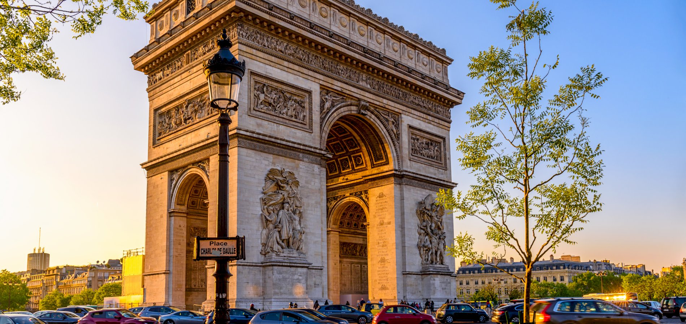
London, Paris & English Castles
7 Days | Paris to London | Twin City Elegance
✅ What's Included
- ✓ All 18 meals — breakfast, lunch & dinner
- ✓ 10 included activities & entrance fees
- ✓ Expert UK tour manager throughout
- ✓ 16-seater private coach
- ✓ All hotel accommodation as per programme
- ✓ Airport transfers (arrival & departure)
- ✓ Porterage at all hotels
- ✓ Tour manager assistance 7am–10pm daily
- ✓ Special dietary meal arrangements on request
🥗 Dining Guarantee
100% international International
🗺 Route Map
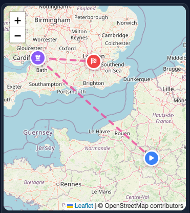
⭐ Don't Miss
- The masala dosa at local restaurant — crispy, authentic, and huge
- The view from Eiffel Tower 2nd level — you can see all of Paris\
- The Disney parade at 5:30 PM — see all characters in one spectacular show
Ideal For
Couples, families with children, first-time Europe visitors, those wanting Paris + UK combination
Group Size
Maximum 16 passengers on a private coach. Small group format ensures personal attention and flexibility at every destination.
Hotel Programme
| Location | Hotel | Grade | Nights |
|---|---|---|---|
| Paris | The Jangle Hotel CDG | 4-star | 3 nts |
| Thornbury | Thornbury Castle | Castle | 1 nts |
| London | Heston Hyde Hotel | 4-star | 3 nts |
Day-by-Day Itinerary
Arrive at Charles de Gaulle Airport. Transfer to hotel (The Jangle Hotel CDG or similar 4-star). Check-in and freshen up. Evening: Welcome dinner at a celebrated Paris brasserie. Orientation walk of local area near hotel. Briefing on 3 days in Paris.
Breakfast at hotel. Panoramic Paris city tour: Champs-Élysées (most beautiful avenue), Arc de Triomphe (Napoleon's monument), Place de la Concorde (where guillotine stood), Opéra Garnier (inspiration for Phantom), Louvre Museum (exterior, glass pyramid). Lunch at a Parisian café — authentic South quality cuisine, family-run since 1980s. Afternoon: Eiffel Tower — ascend to 2nd level for panoramic views of Paris (option to summit for extra fee). Seine River cruise — see Notre-Dame, Musée d'Orsay, bridges of Paris from the water. Evening: Dinner at a classic Paris brasserie — Mughlai and North international dishes in elegant setting.
Breakfast at hotel. Transfer to Disneyland Paris (45 minutes). Full day at either Disneyland Park (Sleeping Beauty's Castle, classic Disney magic, 40+ attractions) OR Walt Disney Studios Park (behind-the-scenes cinema, stunt shows, Pixar attractions). Park hopper available for both parks. packed lunch options available at selected restaurants: Hakuna Matata (African/international fusion), Plaza Gardens Restaurant (buffet with veg options). Meet Disney characters, watch parades, experience thrilling rides for all ages. Evening: Return to Paris. Dinner at a classic Paris brasserie — international set meals, relaxed atmosphere after big day.
Breakfast and checkout. Morning at leisure in Paris OR optional visit to Montmartre/Sacré-Cœur (artists' quarter, basilica with city views). Lunch at local restaurant (farewell Paris meal). Afternoon: Eurostar train from Paris Gare du Nord to London St Pancras (2 hours 15 minutes, under the Channel). Transfer to Thornbury Castle (2.5 hours drive through English countryside). Evening: Check-in at Thornbury Castle — your Tudor castle hotel. Welcome dinner with quality options arranged by castle chef. Explore ramparts, wine cellar, and historic rooms. Sleep where Henry VIII slept.
Breakfast at castle. Late checkout (11 AM). Leisurely morning exploring Thornbury Castle grounds, gardens, and historic rooms. Lunch at a Windsor town centre restaurant. Afternoon: Visit Windsor Castle — Queen's official residence, State Apartments (opulent rooms), St George's Chapel (Harry & Meghan's wedding, royal tombs), Queen's Dolls' House (world's most famous). Transfer to London (1 hour). Check-in at Heston Hyde Hotel, Hounslow. Evening: Dinner at a celebrated local restaurant (King's Cross) — vintage-style cuisine, vintage railway atmosphere.
Breakfast at hotel. London city tour: Big Ben, Houses of Parliament, Westminster Abbey (exterior), Buckingham Palace (Changing of Guard if scheduled), Trafalgar Square, Piccadilly Circus. Lunch at a Covent Garden brasserie. Afternoon: Tower of London with Beefeater guide — Crown Jewels including Crown Jewels collection, White Tower, medieval history. London Eye experience — panoramic views. Evening: Dinner at local restaurant (Whitechapel) — Punjabi grill specialties, famous for seekh kebabs (veg options excellent).
Breakfast and checkout. Visit Lords Cricket Stadium — "Home of Cricket" tour including Long Room, players' dressing rooms, museum, see the Ashes urn. If closed: extended Tower visit. Lunch at a Michelin-starred Mayfair restaurant. Afternoon: Bicester Village outlet shopping — luxury brands at discounted prices, VIP shopping card included. Transfer to Heathrow Airport (45 minutes). Departure flights to India. End of 7-day twin-city journey with memories of Paris elegance, castle luxury, and London icons.
Itinerary subject to change. All tours operate on 16-seater private coaches with experienced UK tour managers. Bookings & pricing: international@tripfactory.com · ORN Group / TripFactory UK
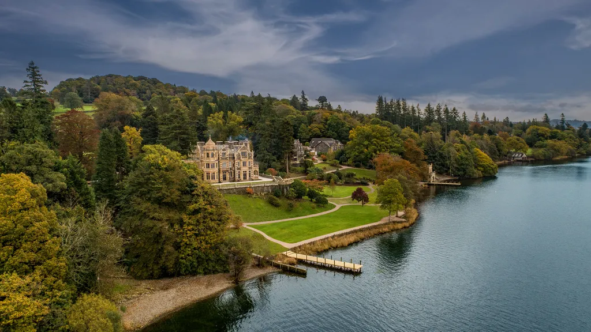
Lake District & Yorkshire Dales Discovery
6 Days | Manchester to York | England\
✅ What's Included
- ✓ All 15 meals — breakfast, lunch & dinner
- ✓ 10 included activities & entrance fees
- ✓ Expert UK tour manager throughout
- ✓ 16-seater private coach
- ✓ All hotel accommodation as per programme
- ✓ Airport transfers (arrival & departure)
- ✓ Porterage at all hotels
- ✓ Tour manager assistance 7am–10pm daily
- ✓ Special dietary meal arrangements on request
🥗 Dining Guarantee
100% international International
🗺 Route Map

⭐ Don't Miss
- A lakeside dinner at The Ro Hotel Windermere — stunning views over the water as the sun sets
- Stepping stones across River Wharfe at Bolton Abbey — iconic Yorkshire photo opportunity
- The Grasmere Gingerbread — Sarah Nelson invented this in 1854, and it\
Ideal For
Nature lovers, walkers, photographers, those seeking relaxation, couples
Group Size
Maximum 16 passengers on a private coach. Small group format ensures personal attention and flexibility at every destination.
Hotel Programme
| Location | Hotel | Grade | Nights |
|---|---|---|---|
| Leeds | Weetwood Hall Estate | Manor | 1 nts |
| Windermere | The Ro Hotel | 4-star | 3 nts |
| Haweswater | The Haweswater Hotel | Country | 1 nts |
| York | Judges Court York | 4-star | 1 nts |
Day-by-Day Itinerary
Arrive at Manchester Airport. Transfer to Weetwood Hall Estate, Leeds (1 hour). Check-in and explore 17th-century manor house grounds — Jacobean architecture, parkland walks, 9-hole golf course. Evening: Dinner at a celebrated Leeds restaurant (Leeds) — Yorkshire-based international chain founded by Kashmiri immigrants, excellent international selection including their famous silver set meal presentation.
Breakfast at hotel. Drive to Yorkshire Dales National Park — England's most scenic dales. Visit Bolton Abbey — ruined 12th-century priory by River Wharfe, stepping stones across river. Aysgarth Falls — triple cascade waterfalls, featured in Robin Hood Prince of Thieves. Hawes village — Wensleydale cheese tasting at source (the "Wallace and Gromit" cheese). Lunch at The international Lounge (Skipton) — traditional curries. Afternoon: Scenic drive to Lake District (1.5 hours). Check-in at The Ro Hotel, Windermere. Orientation walk of Bowness-on-Windermere — lakeside village atmosphere. Evening: Dinner at The Cottage (Bowness) — lakeside quality cuisine with views.
Breakfast at hotel. Windermere Lake cruise from Bowness to Ambleside — traditional steamer or modern launch, surrounded by fells. Ambleside — Bridge House (tiny house over stream), Waterhead pier, shops. Continue to Grasmere — Dove Cottage (William Wordsworth's home where he wrote "I wandered lonely as a cloud"), Wordsworth Museum, Grasmere Gingerbread Shop (unique recipe since 1854, only sold here). Lunch at a local Ambleside restaurant — Himalayan/Nepalese cuisine with menu options. Afternoon: Rydal Mount (Wordsworth's later home), Rydal Water walk. Evening: Return to Windermere. Dinner at Bombay Spice — traditional curries.
Breakfast at hotel. Drive to Ullswater — England's most beautiful lake according to Wordsworth. Ullswater Steamers cruise to Howtown — traditional wooden launch boats. Optional: hike to Aira Force waterfall (50ft cascade through woodland, National Trust). Lunch at a local Keswick restaurant. Afternoon: Keswick — market town, Castlerigg Stone Circle (5,000-year-old stone circle with mountain backdrop — more atmospheric than Stonehenge, free to enter), Derwentwater lakeside walk. Evening: Return to Windermere. Dinner at The Royal Oak (Bowness) — extensive international menu, local favourite.
Breakfast and checkout. Drive to Haweswater Reservoir (30 minutes) — remote, dramatic landscape, valley with no phone signal. Check-in at The Haweswater Hotel — your digital detox retreat. Lunch at hotel — quality options arranged. Afternoon: Day at leisure — red squirrel spotting (endangered native species, come right up to hotel), peregrine falcon watching, walking trails, fishing (permit required), photography, or simply relax by fireside with book. Evening: Dinner at The Haweswater Hotel with quality options. Stargazing with hot chocolate — minimal light pollution means Milky Way visible to naked eye, one of best dark sky sites in England.
Breakfast and checkout. Drive to York (2 hours). Check-in at Judges Court York (city centre, drop luggage). York Minster cathedral tour — largest Gothic cathedral in Northern Europe, Great East Window (size of tennis court), Undercroft (Roman ruins beneath), optional tower climb. Walk medieval city walls — best preserved in England. Shambles street — inspiration for Diagon Alley, overhanging timber-framed shops. Lunch at Mumbai Lounge (York) — authentic Mumbai street food. Afternoon: Transfer to Manchester Airport (1.5 hours) OR Leeds Bradford Airport (45 minutes) for departure. End of 6-day nature and heritage journey.
Itinerary subject to change. All tours operate on 16-seater private coaches with experienced UK tour managers. Bookings & pricing: international@tripfactory.com · ORN Group / TripFactory UK
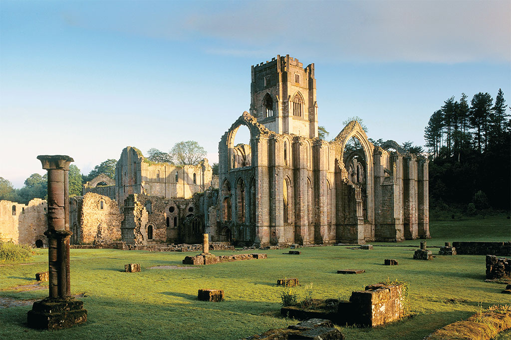
Ultimate UK Heritage & Castles
10 Days | London to Edinburgh | Castles, Cathedrals & Coast
✅ What's Included
- ✓ All 27 meals — breakfast, lunch & dinner
- ✓ 15 included activities & entrance fees
- ✓ Expert UK tour manager throughout
- ✓ 16-seater private coach
- ✓ All hotel accommodation as per programme
- ✓ Airport transfers (arrival & departure)
- ✓ Porterage at all hotels
- ✓ Tour manager assistance 7am–10pm daily
- ✓ Special dietary meal arrangements on request
🥗 Dining Guarantee
100% international International
🗺 Route Map
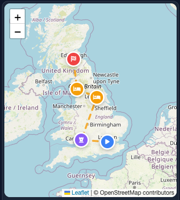
⭐ Don't Miss
- The Rajasthani set meal at The Ivy — this is authentic, not adapted for British palate
- The Coronation Chair in Westminster Abbey — every English king and queen has been crowned in this chair since 1308
- St George\
Ideal For
History enthusiasts, heritage lovers, mature travellers, those seeking unique accommodation
Group Size
Maximum 16 passengers on a private coach. Small group format ensures personal attention and flexibility at every destination.
Hotel Programme
| Location | Hotel | Grade | Nights |
|---|---|---|---|
| London | Heston Hyde Hotel | 4-star | 2 nts |
| Thornbury | Thornbury Castle | Castle | 2 nts |
| York | Judges Court York | 4-star | 2 nts |
| Windermere | The Ro Hotel | 4-star | 2 nts |
| Edinburgh | Dalhousie Castle | Castle | 2 nts |
Day-by-Day Itinerary
Arrive at London Heathrow. Transfer to Heston Hyde Hotel, Hounslow. Check-in. Welcome dinner at The Ivy (London) — authentic Rajasthani cuisine with traditional décor and folk performances. Tour orientation covering 10-day heritage journey.
Breakfast at hotel. Tower of London with Beefeater guide — Crown Jewels including Crown Jewels collection, White Tower, medieval history, Traitors' Gate. Lunch at a Covent Garden brasserie. Afternoon: Westminster Abbey tour — coronation church of English monarchs since 1066, Poets' Corner, Royal Tombs. Big Ben and Houses of Parliament (exterior). Thames River walk. Dinner at a celebrated local restaurant (King's Cross) — vintage-style cuisine.
Breakfast and checkout. Visit Windsor Castle — Queen's official residence, State Apartments, St George's Chapel (Harry & Meghan's wedding), Queen's Dolls' House. Lunch at a Windsor town centre restaurant. Afternoon: Drive to Thornbury (2 hours). Check-in at Thornbury Castle — your Tudor castle. Explore grounds, wine cellar, ramparts. Evening: Castle banquet dinner with quality options. Sleep where royalty slept.
Breakfast at castle. Cotswolds tour: Bibury (Arlington Row — most photographed cottages in England), Bourton-on-the-Water ("Venice of the Cotswolds"), Stow-on-the-Wold. Lunch at a Bath restaurant. Afternoon: Bath city tour — Roman Baths (2,000-year-old thermal waters, walk where Romans walked), Royal Crescent, Bath Abbey. Return to Thornbury Castle. Evening: Day at leisure at castle — explore gardens, enjoy afternoon tea, relax in historic surroundings. Dinner with menu options.
Breakfast and checkout. Visit Stratford-upon-Avon — Shakespeare's Birthplace (restored 16th-century house), Anne Hathaway's Cottage (thatched-roof romantic hideaway), Holy Trinity Church (Shakespeare's grave). Lunch at The a local Stratford restaurant (Stratford) — international fusion. Afternoon: Drive to York (2.5 hours). Check-in at Judges Court York — historic city centre location. Evening: Dinner at Mumbai Lounge (York) — authentic Mumbai street food.
Breakfast at hotel. York Minster cathedral tour — Great East Window (largest medieval stained glass in world), Undercroft (Roman ruins beneath cathedral), tower climb optional. Walk medieval city walls — 2-mile circuit, best preserved in England. Shambles street — inspiration for Diagon Alley. National Railway Museum — largest railway museum in world, free entry. Lunch at The international Ocean (York) — traditional curries. Afternoon: Continued York exploration. Evening: Dinner at Akbar's (York) — North international and Bengali cuisine.
Breakfast and checkout. Drive through Yorkshire Dales: Bolton Abbey (ruined priory by river), Aysgarth Falls (waterfalls), Hawes (Wensleydale cheese tasting). Lunch at The international Lounge (Skipton) — traditional curries. Afternoon: Continue to Lake District (1.5 hours). Check-in at The Ro Hotel, Windermere. Evening: Dinner at The Cottage (Bowness) — lakeside quality cuisine.
Breakfast at hotel. Windermere Lake cruise. Visit Hill Top Farm (Beatrix Potter's home — preserved exactly as she left it), Hawkshead village. Lunch at a local Ambleside restaurant. Afternoon: Dove Cottage (Wordsworth's home), Grasmere Gingerbread Shop, Rydal Mount. Evening: Dinner at Bombay Spice (Windermere) — traditional curries.
Breakfast and checkout. Scenic drive to Edinburgh via Hadrian's Wall (3.5 hours). Photo stops at Roman ruins. Lunch at a Carlisle restaurant. Afternoon: Check-in at Dalhousie Castle — your 13th-century fortress. Falconry experience: handle hawks, owls, and eagles with expert falconers. Evening: Castle dinner with quality options. Relax in Aqueous Spa.
Breakfast at castle. Edinburgh Castle — Crown Jewels of Scotland, Stone of Destiny, Great Hall. Royal Mile walk — from Castle to Holyrood Palace, St Giles' Cathedral, historic closes. Lunch at a celebrated Edinburgh restaurant — contemporary international. Afternoon: Transfer to Edinburgh Airport (30 minutes). Departure flights.
Itinerary subject to change. All tours operate on 16-seater private coaches with experienced UK tour managers. Bookings & pricing: international@tripfactory.com · ORN Group / TripFactory UK
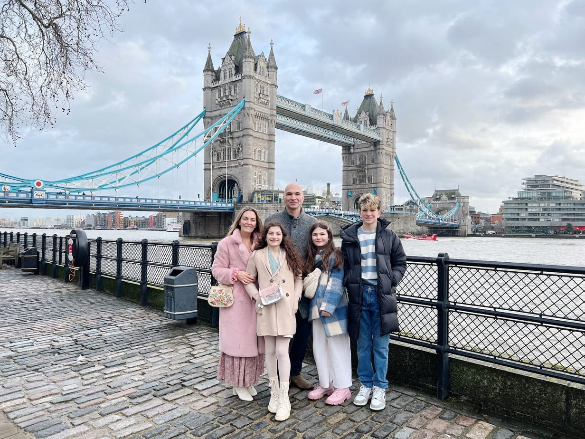
UK Family Adventure: Castles, Wizards & Wildlife
12 Days | London to Edinburgh | Ultimate Family Vacation
✅ What's Included
- ✓ All 33 meals — breakfast, lunch & dinner
- ✓ 20 included activities & entrance fees
- ✓ Expert UK tour manager throughout
- ✓ 16-seater private coach
- ✓ All hotel accommodation as per programme
- ✓ Airport transfers (arrival & departure)
- ✓ Porterage at all hotels
- ✓ Tour manager assistance 7am–10pm daily
- ✓ Special dietary meal arrangements on request
- ✓ Kids' portions & high chairs available
🥗 Dining Guarantee
100% international International
🗺 Route Map
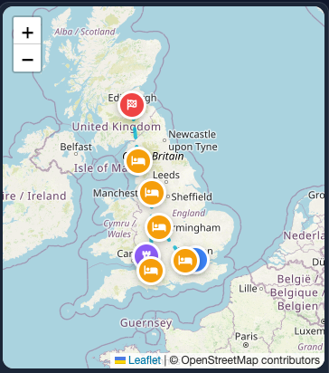
⭐ Don't Miss
- The kids\
- The green screen broomstick experience — kids actually fly on a broomstick and the video shows them flying over London like Harry Potter
- The T-Rex at Natural History Museum — it moves and roars, and kids absolutely love it
Ideal For
Families with children 5-15, multi-generational travel, school holiday trips
Group Size
Maximum 16 passengers on a private coach. Small group format ensures personal attention and flexibility at every destination.
Hotel Programme
| Location | Hotel | Grade | Nights |
|---|---|---|---|
| London | Heston Hyde Hotel | 4-star | 3 nts |
| Birmingham | Delta Hotels Marriott | 4-star | 2 nts |
| Thornbury | Thornbury Castle | Castle | 1 nts |
| Longleat | Longleat area hotel | 4-star | 1 nts |
| Leeds | Weetwood Hall Estate | Manor | 2 nts |
| Windermere | The Ro Hotel | 4-star | 2 nts |
| Edinburgh | Dalhousie Castle | Castle | 1 nts |
Day-by-Day Itinerary
Arrive at London Heathrow. Welcome by your tour manager. Kids receive welcome activity packs. Transfer to Heston Hyde Hotel, Hounslow (20 minutes). Check-in with early room access if available. Evening: Welcome family dinner at The Ivy (London) — kids' menu available, high chairs provided, ice cream for children. Tour briefing for parents.
Early breakfast at hotel (7:00 AM for early entry). Depart for Warner Bros. Studio Tour London — The Making of Harry Potter (1 hour drive). FULL DAY MAGICAL EXPERIENCE: Walk through the Great Hall at Hogwarts, see original costumes and props, board the Hogwarts Express on Platform 9¾, walk down Diagon Alley (Ollivanders, Flourish & Blotts), see the Forbidden Forest with animatronic creatures, try butterbeer (non-alcoholic, kids love it!), green screen experience: fly on broomstick over London. Lunch at studio café (packed packed lunch available for children if preferred). Continue studio exploration. Souvenir shop for wands and robes. Evening: Return to London. Dinner at a local restaurant (Covent Garden) — children's menu with popular family dishes.
Breakfast at hotel. London Eye — family capsule with 360° views, kids' activity sheet provided. Sea Life London Aquarium — walk through ocean tunnel, see sharks, touch pool experience (kids can touch starfish), penguin beach. Lunch at Madras Café (near South Bank) — quick service, kids' portions. Natural History Museum (free entry) — DINOSAURS! See the famous Diplodocus skeleton in Hintze Hall, T-Rex moving model in dinosaur gallery, earthquake simulator, hands-on science zones. Children's favourite museum. Late Afternoon: Diana Memorial Playground (Kensington Gardens) — pirate ship playground, free entry, let kids burn energy. Evening: Dinner at a celebrated local restaurant (King's Cross) — kids' menu, lively atmosphere, early evening for tired children.
Breakfast and checkout. Depart for LEGOLAND Windsor (45 minutes). FULL DAY THEME PARK: Over 55 interactive rides and attractions, Miniland (LEGO replicas of famous landmarks including London, Paris, Sydney), Driving School (kids aged 6-13 drive LEGO cars and get real driving licences), Pirate Falls, Viking River Splash (water rides — bring change of clothes!), Star Wars LEGO models, Duplo Valley for younger children (ages 2-5), live shows and character meet-and-greets. Lunch inside Legoland (various options, packed packed lunch available). Late Afternoon: Depart for Birmingham (2 hours). Check-in at Delta Hotels by Marriott Birmingham — swimming pool for evening relaxation. Evening: Dinner at hotel with quality options. Family movie night in hotel room or early sleep for tired kids.
Breakfast at hotel. Depart for Cadbury World (30 minutes). FULL MORNING CHOCOLATE ADVENTURE: 4D Chocolate Adventure cinema experience (moving seats, wind, water), see how chocolate is made from bean to bar, write your name in melted chocolate, play in chocolate rain, free chocolate samples throughout tour, outdoor African adventure play area, world's biggest Cadbury shop. Lunch at Cadbury World café or packed packed lunch. Afternoon: Thinktank Birmingham Science Museum — interactive science garden, planetarium, steam engines, aircraft including Spitfire, future technology zone, hands-on exhibits perfect for children. Evening: Dinner at Pushkar (Birmingham) — family-friendly, kids' local cuisine options.
Breakfast and checkout. Depart for Cotswolds (1 hour). Cotswold Wildlife Park — AMAZING FOR KIDS: see lions, giraffes, rhinos, zebras, walk through lemur enclosure (lemurs climb on you), train ride around park, adventure playground, farmyard petting area, dinosaurs in the woods (model T-Rex!). Picnic lunch in park (packed packed lunch provided) or park café. Afternoon: Drive to Thornbury Castle (30 minutes). CASTLE ADVENTURE BEGINS! Kids receive "Junior Knight" certificates on arrival, explore castle ramparts and towers, treasure hunt in castle grounds (find hidden clues), dress-up box with medieval costumes for photos. Evening: Medieval Banquet Dinner at castle — kids eat early (5:30 PM), adults later. quality options for all.
Breakfast at castle. Checkout with sad goodbyes. Depart for Longleat Safari Park (45 minutes). FULL DAY SAFARI ADVENTURE — KIDS LOVE THIS: Drive-through safari (in our coach) with lions, tigers, wolves, elephants, giraffes, monkeys (they climb on vehicles!), safari boats to see hippos and sea lions, Jungle Kingdom walk-through enclosures with small animals, Adventure Castle (huge playground with slides and towers), Longleat House (stately home), world's longest hedge maze, Postman Pat Village for younger children. Lunch at safari park (various options, packed packed lunch available). Late Afternoon: Transfer to hotel near Longleat/Bath (30 minutes). Check-in. Evening: Dinner at hotel or a local Bath restaurant. Family games evening or early night.
Breakfast and checkout. Scenic drive to Manchester (3 hours with stops). Lunch at The international Cottage (en route) — break journey. Afternoon: Check-in at Weetwood Hall Estate. Science and Industry Museum Manchester — GREAT FOR KIDS: interactive exhibits on Manchester's industrial past, working steam engines, Air and Space Hall with real aircraft including Spitfire, Experiment! hands-on science zone, free entry. Late Afternoon: Hotel pool time or explore Weetwood Hall grounds (9-hole family golf, woodland walks). Evening: Dinner at a celebrated Leeds restaurant (Leeds) — family-friendly, kids' portions.
Early breakfast at hotel (6:30 AM for early entry). Depart for Alton Towers (1.5 hours). FULL DAY AT UK'S BIGGEST THEME PARK: CBeebies Land for ages 2-6 (In the Night Garden, Postman Pat, Octonauts, live shows), thrill rides for older kids (Nemesis, Oblivion, The Smiler, Wicker Man), Waterpark optional afternoon session (separate ticket), beautiful gardens for quieter moments, monorail transport around park. Lunch inside Alton Towers (various options, packed packed lunch available). Late Afternoon: Depart for Lake District (2 hours). Check-in at The Ro Hotel, Windermere. Evening: Dinner at The Cottage (Bowness) — lakeside location, kids' menu. Early night after big day.
Breakfast at hotel. Windermere Lake Cruise — kids love boats! Cruise from Bowness to Ambleside. The World of Beatrix Potter Attraction — PERFECT FOR YOUNGER KIDS: walk through Peter Rabbit's world, see Jemima Puddle-Duck, Mrs. Tiggy-Winkle, interactive exhibits, garden play area. Lunch at a local Ambleside restaurant — kids' options available. Afternoon: Gruffalo Trail at Whinlatter Forest — OUTDOOR ADVENTURE: follow the Gruffalo story through the woods, activity pack for kids, play areas and sculptures, beautiful forest setting, free entry (parking charge only). Late Afternoon: Return to Windermere. Beach time at Bowness Bay — build sandcastles, paddle in lake (weather permitting). Evening: Dinner at Bombay Spice (Windermere) — takeaway option if kids tired.
Breakfast and checkout. Scenic drive to Edinburgh via Hadrian's Wall (3.5 hours with stops). Lunch stop in Carlisle. Afternoon: Arrive at Dalhousie Castle — FAIRYTALE FINALE! Check-in. Kids receive "Lord/Lady of the Castle" certificates. Edinburgh Castle — see Crown Jewels, Mons Meg cannon, prison cells. Walk Royal Mile — street performers, tartan shops, fudge tasting. Return to Dalhousie Castle. Falconry experience for kids: handle owls and hawks (gentle birds for children). Evening: Farewell Medieval Banquet — early kids' dinner (5:30 PM), adults later. quality options.
Breakfast at castle. Edinburgh Zoo — FINAL ANIMAL ADVENTURE: Giant Pandas (if still at zoo — check current status), Penguin Parade (daily walk of penguins at 11:00 AM — must-see!), koalas, lions, tigers, giraffes, hilltop location with great views, play areas. Lunch at zoo café or packed packed lunch. Afternoon: Transfer to Edinburgh Airport (30 minutes). Departure flights. End of 12-day family adventure with memories of magic, wildlife, castles, and fun. Farewell gifts for kids: Scottish teddy bears, photo USB.
Itinerary subject to change. All tours operate on 16-seater private coaches with experienced UK tour managers. Bookings & pricing: international@tripfactory.com · ORN Group / TripFactory UK
![Scottish Highlands and Glens]()
Castles & Glens: Scotland & Northern England
12 Days | London to Edinburgh | Castles, Lochs & Highland Heritage
✅ What's Included
- ✓ All 33 meals — breakfast, lunch & dinner
- ✓ Expert UK tour manager throughout
- ✓ 16-seater private coach with driver
- ✓ 2 nights Thornbury Castle Hotel
- ✓ 2 nights Dalhousie Castle Edinburgh
- ✓ All castle & heritage entrance fees
- ✓ Warwick Castle full-day experience
- ✓ Stonehenge & Bath Roman Baths
- ✓ Edinburgh Castle admission
- ✓ Loch Lomond & Loch Ness cruise
- ✓ Airport transfers
⭐ Tour Highlights
- 🏰 Warwick Castle — medieval fortress, jousting & falconry
- 🗿 Stonehenge — 5,000-year-old UNESCO monument
- 🛁 Bath Roman Baths — 2,000 years of history
- 🏰 Thornbury Castle — England's only Tudor castle hotel
- 🏔 Lake District — UNESCO World Heritage landscape
- 🏴 Loch Lomond & Loch Ness cruises
- 🏰 Edinburgh Castle — Crown Jewels of Scotland
- 🏰 Dalhousie Castle — 13th-century castle hotel
- 🎭 Stratford-upon-Avon — Shakespeare's birthplace
- 🏛 York Minster & medieval city walls
🗺 Route Map
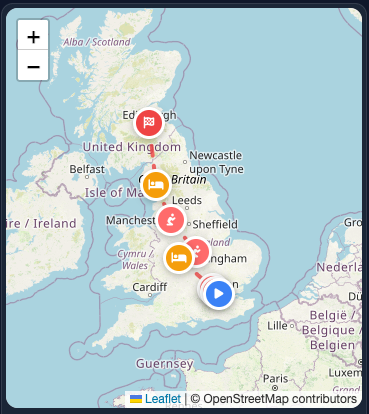
| Nights | Location | Hotel | Board |
|---|---|---|---|
| 1–2 | London | Heston Hyde Hotel | B&B |
| 3–4 | Thornbury | Thornbury Castle Hotel | B&B + Dinner |
| 5 | Stratford / Birmingham | Delta Marriott, Birmingham | B&B |
| 6 | York | Judges Court York | B&B |
| 7–8 | Lake District | The Ro Hotel, Windermere | B&B |
| 9–10 | Loch Lomond / Scotland | Rosslea Hall Hotel | B&B |
| 11 | Edinburgh | Dalhousie Castle Hotel | B&B + Dinner |
Arrive at London Heathrow. Welcome by your tour manager. Transfer to Heston Hyde Hotel, Hounslow. Evening orientation dinner and briefing.
Full London city tour: Buckingham Palace, Westminster Abbey, Big Ben, Houses of Parliament, Tower Bridge, St Paul's Cathedral. Lunch at a Covent Garden brasserie. Afternoon: Tower of London — Crown Jewels, Beefeater tour. Evening: London Eye for panoramic night views. Dinner at a celebrated King's Cross restaurant.
Drive to Warwick Castle — one of England's finest medieval fortresses. Full day: ramparts, Great Hall, dungeon, trebuchet experience, daily falconry show and jousting display. Lunch at the castle. Afternoon: transfer to Thornbury Castle — England's only Tudor castle hotel. Dinner in the castle's historic dining room. Overnight Thornbury Castle.
Morning at Thornbury Castle — explore the Tudor gardens and vineyard. Drive to Stonehenge — the world's most famous prehistoric monument, 5,000 years old, UNESCO World Heritage Site. Continue to Bath: Roman Baths (2,000-year-old thermal complex), Royal Crescent, Pulteney Bridge. Lunch at a Bath restaurant. Return to Thornbury Castle. Dinner at castle. Overnight Thornbury.
Checkout and drive through the Cotswolds — Bibury (Arlington Row cottages), Bourton-on-the-Water, Stow-on-the-Wold. Continue to Stratford-upon-Avon: Shakespeare's Birthplace, Anne Hathaway's Cottage, Holy Trinity Church. Lunch at a Stratford restaurant. Afternoon: drive to Birmingham. Dinner at a Birmingham city centre restaurant. Overnight Delta Marriott, Birmingham.
Drive through the Peak District — England's first national park: dramatic moorlands, gritstone edges, Chatsworth House (the "Palace of the Peak"). Continue north to York: York Minster (largest Gothic cathedral in Northern Europe), Shambles street (medieval timber-framed shops), medieval city walls (2-mile walkable circuit). Lunch at a York restaurant. Overnight Judges Court York.
Drive through the Yorkshire Dales: Bolton Abbey ruins by the River Wharfe, Aysgarth Falls triple cascade, Hawes village with Wensleydale cheese tasting. Arrive in the Lake District — UNESCO World Heritage Site. Check in at The Ro Hotel, Windermere. Afternoon: Windermere cruise. Dinner at a lakeside restaurant. Overnight The Ro Hotel.
Full day exploring the Lakes. Morning: Grasmere — Dove Cottage (Wordsworth's home), Grasmere Gingerbread. Ambleside and Waterhead pier. Afternoon: Beatrix Potter's Hill Top Farm at Near Sawrey. Ullswater Steamers cruise — England's most beautiful lake. Lunch at a local restaurant. Evening: dinner at hotel. Overnight The Ro Hotel, Windermere.
Drive north through Cumbria. Stop at Hadrian's Wall UNESCO World Heritage Site — 73-mile Roman frontier built AD 122. Visit Housesteads Roman Fort (best-preserved in Britain) and Sycamore Gap (famous tree featured in Robin Hood). Lunch at a Carlisle restaurant. Cross into Scotland. Arrive at Rosslea Hall Hotel on the banks of the Clyde. Dinner at hotel. Overnight Rosslea Hall.
Morning: Loch Lomond cruise — largest freshwater lake in Britain, beautiful "bonnie banks". Luss village. Drive through the Highlands to Loch Ness — cruise on Scotland's most famous loch. Visit Urquhart Castle ruins perched on the loch shore. Lunch at a lochside restaurant. Return to hotel. Overnight Rosslea Hall.
Drive to Edinburgh. Check in at Dalhousie Castle Hotel — your 13th-century fortress. Visit Edinburgh Castle: Crown Jewels of Scotland, Stone of Destiny, Great Hall. Walk the Royal Mile — historic closes, St Giles' Cathedral, Palace of Holyroodhouse. Lunch at a celebrated Edinburgh restaurant. Evening: farewell castle dinner. Overnight Dalhousie Castle.
Breakfast at castle. Late checkout (11 AM). Optional morning: Arthur's Seat hike (45 min, panoramic city views) or Scottish National Gallery. Transfer to Edinburgh Airport for departure flights. Your tour manager assists with check-in. Safe onward journey!
![British Film and Entertainment]()
British Film & Entertainment Experience
9 Days | London · Oxford · Manchester · Liverpool | Iconic Studios, Film Locations & Live Entertainment
✅ What's Included
- ✓ All 24 meals — breakfast, lunch & dinner
- ✓ Expert entertainment & film guide
- ✓ 16-seater private coach with driver
- ✓ Pinewood Studios group tour
- ✓ Harry Potter filming locations walk (Oxford)
- ✓ West End show ticket (London)
- ✓ Beatles Story Museum, Liverpool
- ✓ Albert Dock & Liverpool waterfront tour
- ✓ Cotswolds film locations tour
- ✓ All hotel accommodation
- ✓ Airport transfers
⭐ Tour Highlights
- 🎬 Pinewood Studios — home of James Bond, Star Wars & more
- 🧙 Oxford — Hogwarts filming locations, Christ Church, Bodleian
- 🎭 London West End — live theatre experience
- 🌉 Westminster & South Bank film walk with guide
- 🎸 Beatles Story Museum — Fab Four history
- 🚢 Albert Dock Liverpool — waterfront & film locations
- 🌿 Cotswolds — locations from Downton Abbey, Bridget Jones
- 🏰 Thornbury Castle — filming location finale
- 🎬 Manchester film & TV quarter tour
- 📺 MediaCityUK — BBC & ITV studios, Salford
🗺 Route Map

| Nights | Location | Hotel | Board |
|---|---|---|---|
| 1–3 | London | Heston Hyde Hotel | B&B |
| 4 | Oxford | Old Bank Hotel Oxford | B&B |
| 5 | Cotswolds | Thornbury Castle Hotel | B&B + Dinner |
| 6–7 | Manchester | King Street Townhouse | B&B |
| 8 | Liverpool | Hope Street Hotel | B&B |
Arrive at London Heathrow. Welcome by your film & entertainment guide. Transfer to Heston Hyde Hotel. Evening: orientation walk of central London — South Bank, Tate Modern, Millennium Bridge (Harry Potter filming location). Dinner at a riverside restaurant. Welcome briefing with your film location map and tour guide booklet.
Morning: group tour of Pinewood Studios — home of James Bond (007 Stage), Star Wars, and countless British film classics. See working sound stages, prop stores, and the iconic back lot. Lunch at the studio lot. Afternoon: return to London. Evening: West End theatre show — see one of London's world-famous productions (show selected based on availability). Post-show dinner near the theatre.
Guided film locations walking tour with expert guide: Westminster Bridge (24, Sherlock Holmes), Trafalgar Square (countless film appearances), Borough Market (Harry Potter, Lock Stock), St Paul's Cathedral steps, Leadenhall Market (Diagon Alley in Harry Potter). Lunch at Borough Market. Afternoon: Baker Street and Sherlock Holmes Museum. Tower Bridge at golden hour. Dinner at a local restaurant.
Drive to Oxford. Guided Harry Potter filming locations tour: Christ Church (Great Hall inspiration for Hogwarts, used as Hogwarts exterior), Bodleian Library (Hogwarts library and infirmary), Divinity School (Hogwarts hospital wing), New College cloisters. Also: Inspector Morse and Endeavour filming spots throughout the city. Lunch at the historic Covered Market. Check in at Old Bank Hotel. Evening dinner and explore the city.
Drive through the Cotswolds with film location guide: Bibury (Arlington Row cottages — Bridget Jones's Diary, Stardust), Bourton-on-the-Water (Downton Abbey, various period dramas), Burford, Chipping Campden. Lunch at a Cotswolds village pub. Afternoon: arrive at Thornbury Castle — England's only Tudor castle hotel, itself used in TV and film productions. Gala castle dinner. Overnight Thornbury Castle.
Drive to Manchester. Visit MediaCityUK in Salford — home of BBC North, ITV Studios, dock10 production studios, and the set of Coronation Street. Guided tour of the broadcast complex. Afternoon: Northern Quarter — Manchester's creative and media hub, street art, independent scene. Evening: Manchester's acclaimed restaurant scene. Check in at King Street Townhouse. Overnight Manchester.
Morning: Old Trafford Stadium Tour — Manchester United's Theatre of Dreams, museum and pitch-side access. Afternoon at leisure — shopping at the Arndale, Spinningfields, or the award-winning Whitworth Art Gallery. Optional: Etihad Stadium tour. Evening: dinner at a celebrated Manchester restaurant. Overnight King Street Townhouse.
Transfer to Liverpool (1 hour). Beatles Story Museum at Albert Dock — the definitive Beatles experience: re-created Cavern Club, Hamburg years, Abbey Road and global fame. Walk to Penny Lane and Strawberry Field. Albert Dock — UNESCO World Heritage waterfront, one of the most filmed locations in British TV and film. Lunch at the dockside. Afternoon: Liverpool waterfront, Three Graces. Dinner at Hope Street Hotel. Overnight Liverpool.
Breakfast at hotel. Morning at leisure in Liverpool — browse the independent shops, visit the Walker Art Gallery or the World Museum. Transfer to Manchester Airport (45 minutes) or Liverpool John Lennon Airport for departure flights. Your tour manager assists with check-in. Farewell and safe travels — that's a wrap!
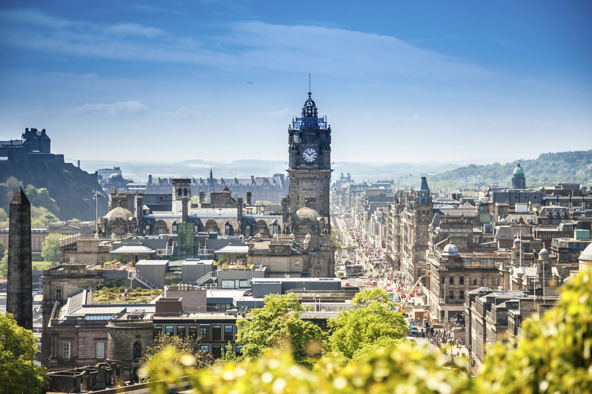
The Scotch Whisky Trail
8 Days | Edinburgh to Speyside | Distilleries, Castles & Highland Scenery
✅ What's Included
- ✓ All 21 meals — breakfast, lunch & dinner
- ✓ 10+ guided distillery tours & tastings
- ✓ Expert whisky specialist guide throughout
- ✓ 16-seater private coach with driver
- ✓ 7 nights accommodation — castle & boutique hotels
- ✓ Edinburgh Castle admission
- ✓ Scotch Whisky Experience, Edinburgh
- ✓ Whisky tasting masterclass with master distiller
- ✓ Airport transfers (arrival & departure)
- ✓ All entrance fees & distillery admission
- ✓ Whisky tasting journals & souvenir dram glass
⭐ Tour Highlights
- 🥃 Glenfiddich — world's most awarded single malt
- 🥃 Macallan — the pinnacle of Highland single malt
- 🥃 Glenlivet — Speyside's most famous distillery
- 🥃 Dalmore — luxury Highland estate distillery
- 🏰 Edinburgh Castle — Crown Jewels & Royal Mile
- 🏰 Balmoral Castle — Royal Highland Estate
- 🏞 Loch Ness — cruise on Scotland's most famous loch
- 🏔 Cairngorms National Park scenic drive
- 🎭 Private whisky blending masterclass
- 🍽 Whisky-paired dinner at castle hotel
🗺 Route Map
| Nights | Location | Hotel | Board |
|---|---|---|---|
| 1–2 | Edinburgh | Dalhousie Castle Hotel | B&B + Dinner |
| 3 | Perthshire | Crieff Hydro Hotel | B&B + Dinner |
| 4–5 | Speyside | Craigellachie Hotel | B&B + Dinner |
| 6 | Inverness | Kingsmills Hotel | B&B + Dinner |
| 7 | Loch Ness / Highlands | Loch Ness Lodge | B&B + Dinner |
Arrive at Edinburgh Airport and transfer to the magnificent Dalhousie Castle Hotel, a 13th-century castle just outside the city. Evening welcome dinner with an introductory whisky tasting — your expert guide introduces the five whisky regions of Scotland. Overnight Dalhousie Castle.
Morning visit to Edinburgh Castle — explore the Crown Jewels, Great Hall and breathtaking city views. Walk the Royal Mile through the Old Town. Afternoon at the Scotch Whisky Experience on the Royal Mile — the definitive whisky attraction with a barrel ride through Scotch history and guided tutored tasting of all five regions. Evening whisky-paired dinner at the castle hotel. Overnight Dalhousie Castle.
Journey north into Perthshire, Scotland's Big Tree Country. Visit Aberfeldy Distillery — famous for its "Dewar's" blended Scotch heritage set beside the River Tay. Tour the distillery and enjoy a tutored tasting. Afternoon drive through stunning Highland scenery to Crieff. Visit Glenturret Distillery — Scotland's oldest working distillery, home of Famous Grouse. Dinner at Crieff Hydro. Overnight Crieff Hydro Hotel.
Drive into the Speyside region — home to more distilleries than anywhere else on earth, producing the world's most celebrated single malts. Morning visit to The Macallan Estate — the pinnacle of luxury whisky production, set on a breathtaking 485-acre estate. The spectacular new distillery is an architectural marvel. Afternoon at Glenfiddich — the world's most awarded single malt Scotch whisky. Private tour including the Solera Vat Room and a Vintage Cask tasting. Whisky-paired dinner at Craigellachie. Overnight Craigellachie Hotel.
A full day in Speyside's distillery heartland. Morning at The Glenlivet — the distillery that defined Speyside style, set in a beautiful highland valley. Visit Strathisla — the oldest continuously operating distillery in Scotland (est. 1786), home of Chivas Regal. Afternoon private whisky blending masterclass with a master blender — create your own personal blend to take home. Evening at leisure in Craigellachie village. Overnight Craigellachie Hotel.
Drive north through breathtaking Highland scenery to Inverness — the capital of the Highlands. En route, visit Dalmore Distillery on the shores of the Cromarty Firth — producers of some of the world's most celebrated and collectable single malts. Explore Inverness Castle and the city centre. Afternoon visit to Culloden Battlefield — the dramatic site of the last battle fought on British soil (1746). Overnight Kingsmills Hotel, Inverness.
The iconic Loch Ness experience — cruise on Loch Ness with commentary on the legendary monster. Visit the dramatic ruins of Urquhart Castle perched on the loch shore. Drive through the Cairngorms National Park — Britain's largest national park with stunning moorland and mountain scenery. Visit Royal Lochnagar Distillery — the Queen's distillery, nestled beneath Balmoral Castle on Royal Deeside. Pass through Balmoral Estate. Farewell whisky dinner at Loch Ness Lodge. Overnight Loch Ness Lodge.
Morning at leisure. Your expert guide hosts a final farewell tasting — comparing your week's favourite drams and recommending bottles for home. Transfer to Aberdeen Airport (or Edinburgh, subject to routing) for your departure flight. Depart with a souvenir dram glass, personalised whisky journal and memories of Scotland's liquid gold.